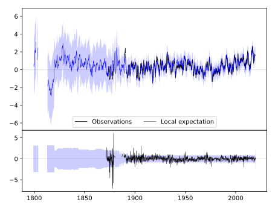
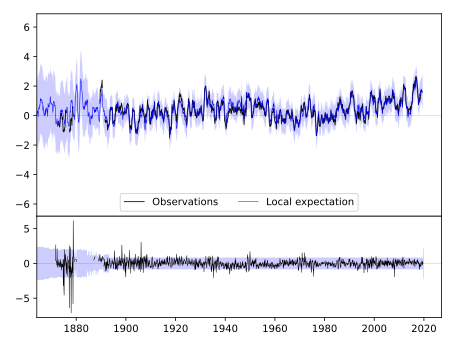
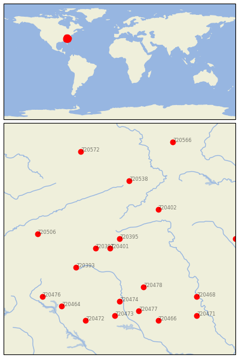

LENOIR [USA]


| Neighbour | Name | Country | Distance | Lon/Lat | Years |
|---|
| 720395 | LENOIR | USA | 2 | -81.5, 35.9 | 1871-2019 |
| 720401 | MORGANTON | USA | 28 | -81.7, 35.7 | 1879-2019 |
| 720397 | MARION 2 NW | USA | 50 | -82.0, 35.7 | 1879-2019 |
| 720402 | MT AIRY 2 W | USA | 97 | -80.7, 36.5 | 1889-2019 |
| 720393 | HENDERSONVILLE 1 NE | USA | 105 | -82.4, 35.3 | 1879-2019 |
| 720478 | WINTHROP UNIV | USA | 120 | -81.0, 34.9 | 1893-2019 |
| 720538 | BURKES GARDEN | USA | 134 | -81.3, 37.1 | 1892-2019 |
| 720474 | SANTUCK | USA | 144 | -81.5, 34.6 | 1891-2019 |
| 720506 | NEWPORT 1 NW | USA | 153 | -83.2, 36.0 | 1879-2019 |
| 720477 | WINNSBORO | USA | 170 | -81.1, 34.4 | 1887-2019 |
| 720473 | NEWBERRY | USA | 178 | -81.6, 34.3 | 1887-2019 |
| 720464 | ANDERSON | USA | 190 | -82.7, 34.5 | 1884-2019 |
| 720468 | CHERAW | USA | 197 | -79.9, 34.7 | 1882-2019 |
| 720476 | WALHALLA | USA | 197 | -83.1, 34.7 | 1884-2019 |
| 720472 | GREENWOOD | USA | 199 | -82.2, 34.2 | 1884-2019 |
| 720466 | CAMDEN 3 W | USA | 202 | -80.7, 34.2 | 1893-2019 |
| 720572 | WILLIAMSON | USA | 212 | -82.3, 37.7 | 1892-2019 |
| 720388 | CHAPEL HILL 2 W | USA | 216 | -79.1, 35.9 | 1820-2019 |
| 720471 | DARLINGTON | USA | 229 | -79.9, 34.3 | 1893-2019 |
| 720566 | LEWISBURG 3 N | USA | 242 | -80.4, 37.9 | 1893-2019 |